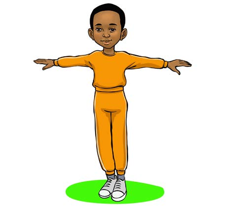
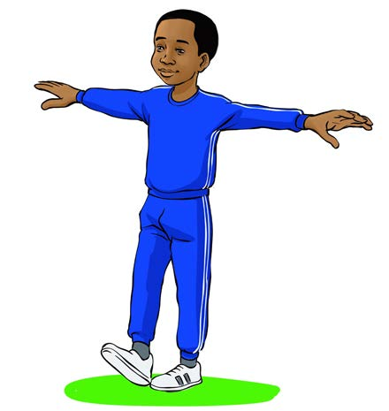

1. Tawanya mikono kuweka msawazo wa mwili.

2. Weka kisigino cha mguu wa kulia mbele ya kidole cha mguu wa kushoto.

44
1. Tawanya mikono kuweka msawazo wa mwili.

2. Weka kisigino cha mguu wa kulia mbele ya kidole cha mguu wa kushoto.
